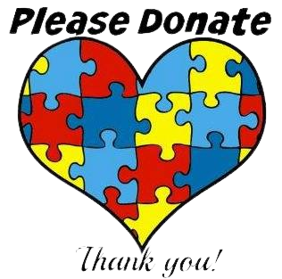

About Autism
Autism, often known as autism spectrum disorder (ASD), is a group of disorders marked by difficulties in social skills, repetitive activities, speech, and nonverbal communication. Autism affects 1 in 44 children in the United States today, according to the Centers for Disease Control
We now know that there are numerous subtypes of autism, the majority of which are influenced by a mix of genetic and environmental variables. Autism is a spectrum illness, which means that each person with autism has their own blend of strengths and challenges. Autism affects how people learn, think, and solve problems in a variety of ways, from highly proficient to severely handicapped. Rare persons with ASD may require a lot of help in their daily life, while others may require less help and, in some situations, none at all

Symptoms
Examples of social communication and social interaction characteristics related to ASD can include:
- Avoids or fails to maintain eye contact
- By 9 months of age, does not respond to his or her name
- By 9 months of age, does not show facial expressions such as happiness, sadness, anger, or surprise
- By the age of 12 months, does not play simple interactive games like pat-a-cake
- By the age of 12 months, he or she makes little or no gestures (for example, does not wave goodbye)
- By the age of 15 months, he or she does not share interests with others (for example, shows you an object that they like)
- By the age of 18 months, there is no purpose in showing you something interesting
- By the age of 24 months, does not notice when others are injured or unhappy
- When the order of toys or other objects is disturbed, he becomes agitated
- Frequently repeats words or phrases (called echolalia)
- Every time he plays with toys, he does it the same way
- Is focused on object portions (for example, wheels)
- Minor changes irritate him
- Has excessive passions
Treatment
There is no one treatment for autism spectrum disorder at the moment (ASD). However, there are several methods for reducing symptoms and increasing skills. If people with ASD receive the right therapies and interventions, they have the best opportunity of utilizing all of their strengths and capabilities. The most successful therapy and interventions are frequently unique to each individual. Most persons with ASD, on the other hand, benefit from highly organized and specialized programs. Treatment for autism can assist people in everyday tasks and minimize symptoms in certain circumstances. Early diagnosis and therapies, such as those provided during preschool or before, have been shown to have a significant favorable impact on symptoms and subsequent skills.
The links provided below offers more information on different types of treatment for Autism spectrum disorder

DONATE HERE TODAY
Next For Autism
NEXT for AUTISM was founded in 2003 by Laura Slatkin and Ilene Lainer who's sons also have autism. They envisioned envisioned an organization that would advance the field of autism services and created this organization that would improve the lives of individuals and families living with autism.
Luv Michael
Luv Michael was founded by Michael Kessaris, Dr. Lisa Liberatore and Dr. Dimitri Kessaris who have austism themselves or have children who has austism. They created this organization not only to produce high quality organic and nut-free products but to create jobs and provide meaningful jobs to the Autistic population.
Autism Society of America
Autism Society for America was founded in 1965 by Bernard Rimland, Ivar Lovaas, and Ruth C. Sullivian with other parents with autistic children. They aimed to connect people who has austism to the resources they need through edcuation, advocacy, support to empower everyone in the Austism community to live fully.
